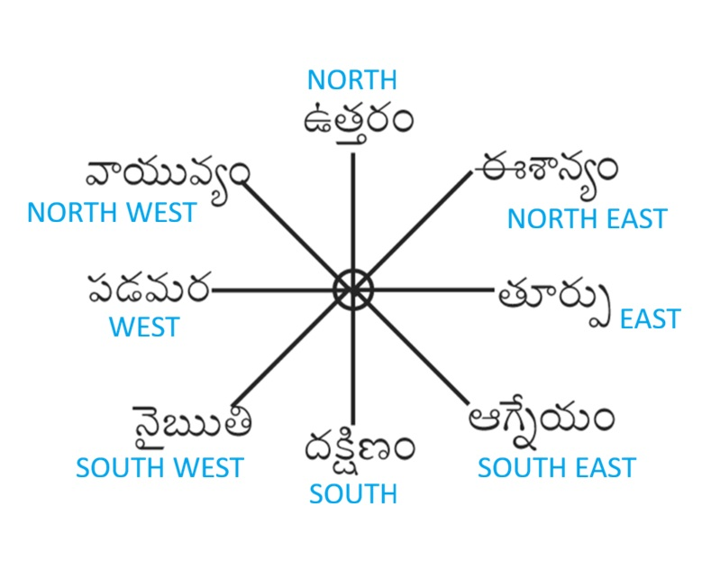

అష్ట దిక్కులు (8 దిశలు) – సంక్షిప్త వివరణ
భూమిపై దిశలను ఎనిమిది భాగాలుగా విభజిస్తారు. వీటినే “అష్ట దిక్కులు” అంటారు.
ప్రతి దిశకు ఒక దిక్పాలకుడు (అధిపతి దేవుడు) ఉన్నాడని పురాణాలు చెబుతాయి. ఇవి ప్రకృతి సమతుల్యతను కాపాడే శక్తులుగా భావిస్తారు.

అష్ట దిక్కులు మరియు వాటి అధిపతులు:
-
తూర్పు (East)
అధిపతి: ఇంద్రుడు
అర్థం: ఉదయం సూర్యోదయం జరిగే దిశ, శక్తి మరియు ఆరంభానికి సూచకం.
-
పడమర (West)
అధిపతి: వరుణుడు
అర్థం: జలం, సముద్రాలకు అధిపతి.
-
ఉత్తరం (North)
అధిపతి: కుబేరుడు
అర్థం: సంపద, ఐశ్వర్యానికి సూచకం.
-
దక్షిణం (South)
అధిపతి: యముడు
అర్థం: నియమం, క్రమశిక్షణ, మరణానికి సంబంధించినది.
-
ఈశాన్యం (North-East)
అధిపతి: ఈశాన (శివుడు)
అర్థం: జ్ఞానం, ఆధ్యాత్మికతకు ప్రతీక.
-
నైఋతి (South-West)
అధిపతి: నిరృతి (రాక్షసాధిపతి)
అర్థం: నాశనం, అపశకునాలకు సూచకం.
-
ఆగ్నేయం (South-East)
అధిపతి: అగ్ని దేవుడు
అర్థం: అగ్ని, శక్తి, శుద్ధి సూచకం.
-
వాయవ్యము (North-West)
అధిపతి: వాయుదేవుడు
అర్థం: గాలి, చలనం, జీవశక్తి.
ముగింపు:
అష్ట దిక్కులు మన జీవితంలో దిశానిర్దేశం మాత్రమే కాకుండా, వాస్తు శాస్త్రం, యాగాలు, పూజలు వంటి ఆధ్యాత్మిక కార్యక్రమాలలో ముఖ్యమైన పాత్ర పోషిస్తాయి. ప్రతి దిశకు సంబంధించిన దిక్పాలకుడిని స్మరించడం శుభప్రదంగా భావించబడుతుంది.